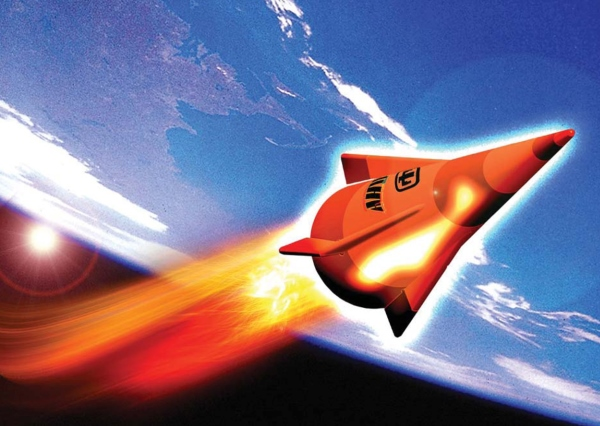
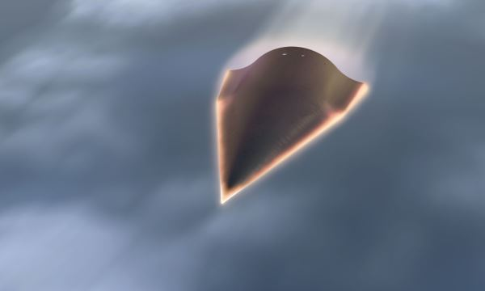
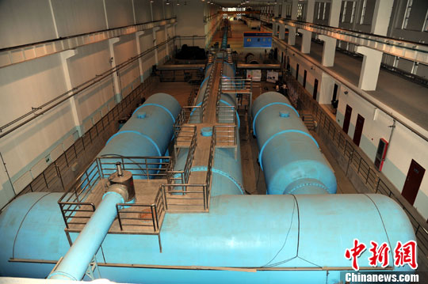

2014-08-20 21:54:00
華盛頓自由明燈報（Washington Free Beacon）是美國軍事工業利益集團的喉舌之一，向來努力鼓吹“中國威脅論”以便推動美國國會增加國防開支。美國軍方當然是樂觀其成，所以常常丟一些共軍新發展的小道消息給它；不過為了保密，通常說得很含糊。
昨天（八月19日）自由明燈報報導了中共於八月7日再次試射WU-14高超音速飛行器的消息。雖然在過去两個禮拜各種蛛絲馬跡已經引起了網絡上有關WU-14的揣測，但是自由明燈報的文章算是有了美國軍方的非正式證實。
那麼什麼是“高超音速飛行器”（Hypersonic Vehicle）呢？一般定義為5倍音速（5 Mach）以上的飛行器。這些飛行器只能在大氣層邊緣極稀薄的空氣裡運行，否則空氣阻力會使其燃燒墜毁，所以飛行高度大約在100公里左右，目前只能由弹道導弹或衛星火箭來發射。高超音速飛行器又分為两類：有動力和無動力。在這麼高的速度下，連衝壓引擎（Ramjet）都無法有效工作，更别提普通的噴射引擎了，所以必須開發超衝壓引擎（Supersonic Ramjet, or Scramjet）；美國和澳洲在這方面最領先，但是幾次試験只有失敗没有成功。因此所謂的高超音速飛行器成功試射，到2014年為止都還只是無動力的滑翔飛行器。
雖然俄國和印度也有高超音速飛行器的研究計劃，但是没人相信俄國在三年之内，印度在三十年之内能成功試射，現在基本上是美國和中共之間的競賽。美國有两個方案：AHW（Advanced Hypersonic Weapon，先進高超音速武器）是陸軍委托桑迪亞國家實驗室（Sandia National Lab）搞的，2011年十一月試射成功，速度低於10 Mach，飛行距離連火箭助推段共3700公里。從下圖可以看出AHW基本上是一個標準的洲際弹道飛弹弹頭加上四片小翼，它其實只是一款能小幅機動的弹道飛弹弹頭，而没有以高超音速滑翔的能力，所以3700公里比助推火箭的原本射程還小。HTV-2則是空軍委托DARPA（Defense Advanced Research Projects Agency，國防部先進研究局）辦的Falcon Project（飛隼計劃）的最新設計，速度達到20 Mach，預定飛行距離10000公里以上。這才是真正的高超音速飛行器，可是HTV-2在2010年和2011年两次試射都失敗，DARPA只好重新設計下一代的飛行器。

AHW

HTV-2
共軍的WU-14在今年的一月9日第一次試射，可能使用了東風導弹（目前的小道消息指出用的是全新的東風16）來助推。八月7日的試射改用了長征二號丙火箭（CZ-2C）。两次試射距離都在1000公里左右。目前有關WU-14的細節基本上是一片空白，既没有圖片也没有數據，連名字都没有（WU-14是美國給的編號），不過有些側面的資料：首先是研究的工具；高超音速飛行器需要高超音速風洞，20世紀的高超音速風洞是活塞式的，速度低，持續時間短，壓力不穩定，例如日本的HIEST（High Enthalpy Shock Tunnel）最高氣流速度在16Mach以下（相當於5Mach的飛行器），在不到2毫秒（ms，millisecond）工作時間内，壓力損失達到30%，根本不足以進行有用的實験。1990年代末期出現的爆轟驅動激波風洞實現了革命性的進步，中共建立了JF10，德國有TH2-D，美國的國家航空太空總署（NASA）則建了HYPULSE（Hypersonic Pulse Facility），最高氣流速度都達到了20Mach以上，工作時間超過了6毫秒。中共在這方面明顯地領先全球，2012年進步到了JF12，最高氣流速度達到了驚人的30Mach，工作時間長達100毫秒，可以有效地複製9Mach飛行器的飛行條件，這對WU-14的開發必然有極大的幫助。

位於中國科學院力學研究所北京懷柔錢學森工程科學實驗基地高溫氣體動力學國家重點實驗室內的JF12，全長265公尺、總重約1000公噸，在所有的技術指標上都遙遙領先美國
在用途方面，美國現階段的目標是開發一款能在一小時内打遍全球的飛弹，可是弹道導弹早已有此能力，高超音速飛行器在性能，價格和技術成熟度上都没有優势。長期來說，美國希望發展高超音速轟炸機，這更是空軍為了保全飛行員職位的白日夢。高超音速轟炸機的雷達及紅外線特癥必然極為明顯，本身極為脆弱巨大，不能快速轉向，又不像弹道導弹在大氣層外可以施放誘餌，在反導技術日益成熟的今日，其生存能力基本上等於零。所以高超音速飛行器對美軍的價值是很有疑問的。對共軍來說，則剛好相反，高超音速飛行器是用來加强弹道導弹的功能的，尤其是東風21這類中程飛弹，換裝小型高超音速飛行器弹頭之後，不但射程增加1/3以上，而且可以在中途做高機動轉向以規避像THAAD或GMD之類的反導飛弹系統，這才是高超音速飛行技術的軍事實用價值所在。
【後註】美國陸軍於八月25日進行AHW的第二次試射，因火箭故障在發射後即爆炸而失敗。原本計劃總飛行距離6500公里，包含AHM的側向機動試験。美國陸軍應會重覆這個試射，但何時進行還不清楚。